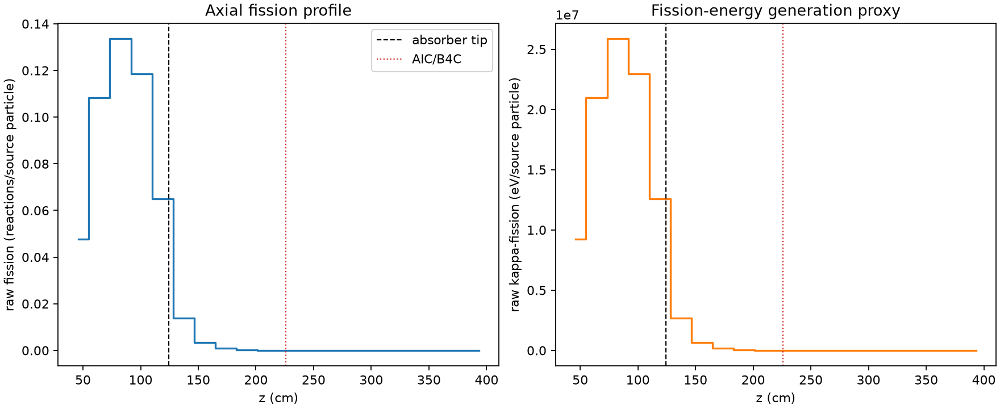
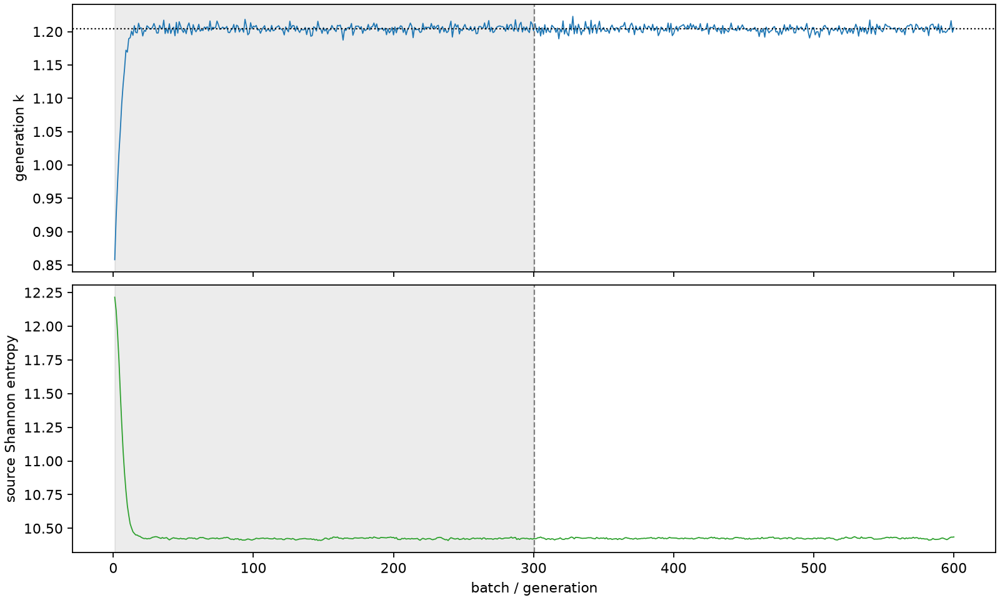

| field | value |
|---|---|
| experiment | V2-STAGE_256_OGRENCI_01-0001 |
| k | 1.2041303967058032 |
| MC standard error | 0.00018708890138540704 |
| seconds | 1009.6574271449936 |
| acceptance | not_assessed |
| convergence | review_required |
Completed is output integrity only; physical and statistical review required. Zero tallies do not prove zero production or zero uncertainty.
| diagnostic | value |
|---|---|
| geometric fuel voxels | 5280 |
| zero fission tally voxels | 1902 |
| low signal fuel voxels | 2791 |
| low signal fission share | 8.899213625399041e-05 |
| low signal kappa share | 8.903038817057825e-05 |
| important fission share | 0.9500802409844846 |
| previous filter included | 2489 |
| duration estimate s | 1562.5173488400023 |
| actual minus estimate s | -552.8599216950088 |
| fission relative MC error | statistics |
|---|---|
| all_geometric_fuel | {"voxels": 5280, "positive_mean_voxels": 3378, "zero_mean_voxels": 1902, "undefined_relative_error_voxels": 1902, "median": 0.026650479603240594, "p95": 0.9368322065485242, "maximum": 1.0000000000000002} |
| low_signal | {"voxels": 2791, "positive_mean_voxels": 889, "zero_mean_voxels": 1902, "undefined_relative_error_voxels": 1902, "median": 0.5331087269878164, "p95": 1.0, "maximum": 1.0000000000000002} |
| important_95pct | {"voxels": 1284, "positive_mean_voxels": 1284, "zero_mean_voxels": 0, "undefined_relative_error_voxels": 0, "median": 0.005067798145948167, "p95": 0.007625526917242134, "maximum": 0.008435659617042767} |
| outside_previous_filter | {"voxels": 2791, "positive_mean_voxels": 889, "zero_mean_voxels": 1902, "undefined_relative_error_voxels": 1902, "median": 0.5331087269878164, "p95": 1.0, "maximum": 1.0000000000000002} |
| kappa_fission relative MC error | statistics |
|---|---|
| all_geometric_fuel | {"voxels": 5280, "positive_mean_voxels": 3378, "zero_mean_voxels": 1902, "undefined_relative_error_voxels": 1902, "median": 0.026611778809301323, "p95": 0.9362511324864095, "maximum": 1.0000000000000002} |
| low_signal | {"voxels": 2791, "positive_mean_voxels": 889, "zero_mean_voxels": 1902, "undefined_relative_error_voxels": 1902, "median": 0.5318308295707175, "p95": 1.0, "maximum": 1.0000000000000002} |
| important_95pct | {"voxels": 1284, "positive_mean_voxels": 1284, "zero_mean_voxels": 0, "undefined_relative_error_voxels": 0, "median": 0.005062210796825013, "p95": 0.007617727654881161, "maximum": 0.008425389779608706} |
| outside_previous_filter | {"voxels": 2791, "positive_mean_voxels": 889, "zero_mean_voxels": 1902, "undefined_relative_error_voxels": 1902, "median": 0.5318308295707175, "p95": 1.0, "maximum": 1.0000000000000002} |
| axial bin | fission share | kappa-fission share |
|---|---|---|
| 1 | 0.09720176647746757 | 0.09720426029565332 |
| 2 | 0.220340614779007 | 0.2203352291130399 |
| 3 | 0.2716850004514494 | 0.2716784167459437 |
| 4 | 0.24112079902705652 | 0.24111512947653488 |
| 5 | 0.13228299047516068 | 0.13228501428256464 |
| 6 | 0.028126955022389315 | 0.028136740243400557 |
| 7 | 0.006936616904732278 | 0.0069390682653045505 |
| 8 | 0.0017283694023459773 | 0.0017290299016613662 |
| 9 | 0.00043874738834345426 | 0.0004389159397828705 |
| 10 | 0.0001068389087509992 | 0.00010688253574446885 |
| 11 | 2.6031072139948504e-05 | 2.6041535422408257e-05 |
| 12 | 4.693422313107616e-06 | 4.69484788537107e-06 |
| 13 | 5.68900870501905e-07 | 5.689769266942159e-07 |
| 14 | 7.76797336142778e-09 | 7.840135280863815e-09 |
| 15 | 0.0 | 0.0 |
| 16 | 0.0 | 0.0 |
| 17 | 0.0 | 0.0 |
| 18 | 0.0 | 0.0 |
| 19 | 0.0 | 0.0 |
| 20 | 0.0 | 0.0 |
Histories include the inactive-to-active transition at batch 300. kappa-fission approximates fission energy production, not total heat deposition.

